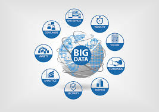

Hey!
All About me
Simple common woman

I’m Smitha Jayaram, and this little blog is about me. I was born in Mangalore and pursued my BE Degree from P.A college of Engineering, Mangalore. I am a person who is more fascinated about food. Hold on...! not just eating, it includes cooking as well.
I’m a food enthusiast with an appetite for almost anything. I love to cook non vegetarian dishes, but am not strictly anything when it comes to what we eat. I love desserts, especially the combination of dark chocolate with roasted nuts. I try to cook things that are practical, interesting, and delicious.I adore all cuisines.Doesn’t matter. I love it all.
On a more personal level, I am a person who is very optimistic and appreciate in living the moment. I like spending time with people, especially the ones who are differnt from the normal croud, who have unique thought process. That excites me a lot.
Tech Freak Zone
There are a lot of technologies that are emerging and trending in IT industry. Below are the list of technologies those excite me
-
Machine Learning
Machine learning is a field of computer science that uses statistical techniques to give computer systems the ability to "learn" (i.e., progressively improve performance on a specific task) with data, without being explicitly programmed
-
VMware
VMware is subsidiary of Dell Technologies that provides cloud computing and platform virtualization software and services. It was the first commercially successful company to virtualize the x86 architecture.
-

Big Data
Big data is data sets that are so voluminous and complex that traditional data-processing application software are inadequate to deal with them. Big data challenges include capturing data, data storage, data analysis, search, sharing, transfer, visualization, querying, updating, information privacy and data source.
Professional Zone...!
July 2013 - July 2015
Role: Trainer (ETA)
Location: Mysore
Education Training and Assessment team of Infosys is responsible for training the fresher's who join Infosys. The team provides training to fresher's in various technologies and release them to various projects. The main duty in the team is session delivery and managing the batches
July 2015 - till date
Role: Senior System Engineer
Location: Bangalore
Application support engineer for Cisco Supply chain management (SCM). It includes the movement and storage of raw materials, work-in-process inventory, and finished goods from point of origin to point of consumption. Cisco’s supply chain is very complex as there are diverse products or offerings, multiple suppliers, various manufacturing and logistics partners with presence in diverse geographies, and many customers across the world. Key Responsibilities include analyzing the application code for any bugs, troubleshooting issues, application support functions, deploying the codes on test environment and testing for any issues and then deploying on live
Work Time...!


Never late...! Here is my first step towards web development. My first project on front end responsive design. Above are few screenshots of my portfolio work. Have a look and contact me, on suggestions to improve the portfolio. You are free to compliment also :-P